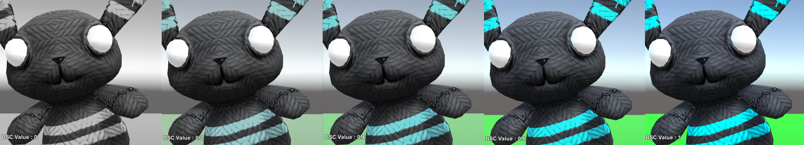
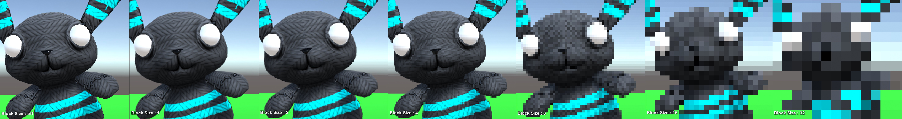
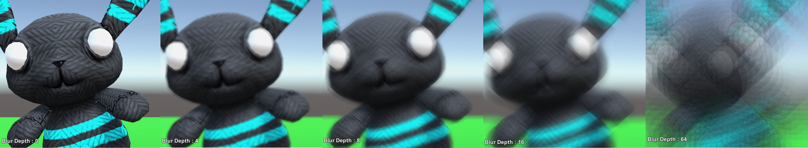
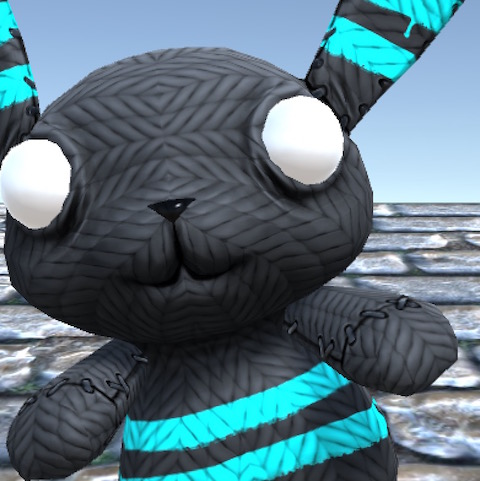
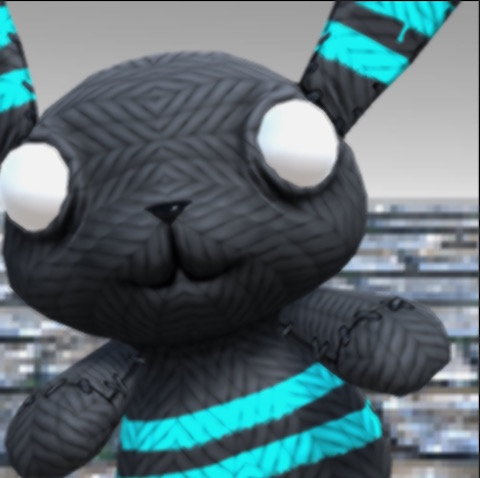

屏幕后期特效是很实用，这里对之前的学习做个总结记录
前段时间买了一本书，很适合入门学习，
一、后期特效
学习编写Shader一个很有用的地方就是可以创建各种自定义的画面特效，也被称为后期特效（post effects）。使用这些画面特效，我们可以创建很多美妙的实时图像，例如高光（Bloom），运动模糊（Motion Blur），HDR特效（HDR effects）等等。大多数市面上的现代游戏使用了很多这样的画面特效，以此来得到景深效果，高光效果，甚至是进行颜色矫正。
后期特效的工作方式是这样的，抓取一个完整的画面图像（或纹理），使用Shader在GPU上处理它的像素后，再返回给Unity的渲染器渲染到屏幕上，也就是一个后期处理的过程。这允许我们可以对渲染后的游戏图像进行实时地逐像素操作，从而给了我们一个全局的控制能力。
Unity提供了OnRenderImage这个方法供我们对渲染在屏幕上的画面或者纹理进行处理，在绘制前的每帧被调用，因此我们会在每帧对其进行处理然后返回给Unity就可以对画面效果进行处理。也就是说为屏幕创建一个材质，然后给他加上Shader使用Sahder中的方法就像处理贴图一样的处理屏幕纹理就可以了。
二、结构代码
屏幕特效的 基本结构就是一个挂在摄像机上的脚本和一个效果处理Shader
C# 代码如下1
2
3
4
5
6
7
8
9
10
11
12
13
14
15
16
17
18
19
20
21
22
23
24
25
26
27
28
29
30
31
32
33
34
35
36
37
38
39
40
41
42
43
44
45
46
47
48
49
50
51//可以在编辑器里实时预览效果
[]
public class CameraEffect : MonoBehaviour
{
//用于特效处理的Shader
public Shader curShader;
//摄像机纹理材质
private Material curMaterial;
public Material material {
get {
if (curMaterial == null) {
curMaterial = new Material (curShader);
curMaterial.hideFlags = HideFlags.HideAndDontSave;
}
return curMaterial;
}
}
//在目标平台特效是否支持
void Start ()
{
if (SystemInfo.supportsImageEffects == false) {
enabled = false;
return;
}
if (curShader != null && curShader.isSupported == false) {
enabled = false;
}
}
void OnRenderImage (RenderTexture sourceTexture, RenderTexture destTexture)
{
if (blurShader != null) {
//Shader传参
material.SetFloat ("_Property", propertyValue);
//输出到屏幕
Graphics.Blit (sourceTexture, destTexture, material);
} else {
Graphics.Blit (sourceTexture, destTexture);
}
}
void OnDisable ()
{
if (curMaterial != null) {
DestroyImmediate (curMaterial);
}
}
}
将上面的代码挂在相机上,我们即可对特效Shader进行处理，通过material.SetFloat ("_Property", propertyValue)传参即可修改Shader属性
三、实例效果
1. 饱和度

1 | Shader "Wonderm/BSC_Effect" { |
2. 像素化

1 | Shader "Wonderm/Mosaic" { |
2. 高斯模糊(毛玻璃)
下面的代码是百度的，出处不记得了，但是挺好用的

1 | Shader "Custom/WaterBlur" { |
四、 内置CG函数
有时我们需要多个特效叠加，但是又希望区分多个Shader脚本，这时候我们可以把核心算法提出来，做为单独的方法供一个集合Shader进行调用，我们将其写入cginc文件，然后就可以通过include进行引用
比如我们将之前的饱和度处理单独提取出来写入ScreenEffect.cginc文件1
2
3
4
5
6
7
8
9
10
11
12
13
14
15
16
17
18#ifndef SCREEN_EFFECT
#define SCREEN_EFFECT
//灰度控制
//_LuminosityAmount = 灰度
//renderTex = 输入图像
fixed4 GrayScale(fixed _LuminosityAmount,fixed4 renderTex) : COLOR
{
float luminosity = 0.299 * renderTex.r + 0.587 * renderTex.g + 0.114 * renderTex.b;
fixed4 finalColor = lerp(renderTex, luminosity, _LuminosityAmount);
return finalColor;
}
//模糊
#endif
然后在集合Shader中调用其方法1
2
3
4
5
6
7
8
9
10
11
12
13
14
15
16
17
18
19
20
21
22
23
24
25
26
27
28
29
30
31
32Shader "Custom/CameraEffect" {
Properties {
_MainTex ("Base (RGB)", 2D) = "white" {}
_LuminosityAmount ("GrayScale Amount", Range(0.0, 1.0)) = 1.0
}
SubShader {
Pass {
CGPROGRAM
#pragma vertex vert_img
#pragma fragment frag
#include "UnityCG.cginc"
#include "CGinc/ScreenEffect.cginc"
uniform sampler2D _MainTex;
fixed _LuminosityAmount;
fixed4 frag(v2f_img i) : COLOR
{
//from the v2f_img struct
fixed4 renderTex = tex2D(_MainTex, i.uv);
renderTex =GrayScale( _LuminosityAmount, renderTex);
return renderTex;
}
ENDCG
}
}
FallBack "Diffuse"
}
这样在叠加特效时，更加方便和快捷
五、特效叠加
虽然上面的方法让叠加特效变得很方便，但有时我们又有其他需求
比如《古墓丽影》、《蝙蝠侠》、《杀手47》中都有特殊视野，先对屏幕进行灰化处理，然后特殊对象高亮，遮挡描边，这样我们必须区分出所绘制的对象
此时我们可以在代码中动态添加新的相机，把需要特效的放入对应的层里，每个相机进行相应的处理
分层相机的话，除了主相机，其他相机要尽量少的渲染物体，以此来减少计算的负荷，因为我们的处理是每帧都在进行的，所以 最好是大量的批次可分层的采用此种方式，其他的尽可动态修改单个物体的shader来最大化减少计算量
下面是三个特效叠加之后的效果
特效前

特效后，背景灰化，地板马赛克，前景模糊
